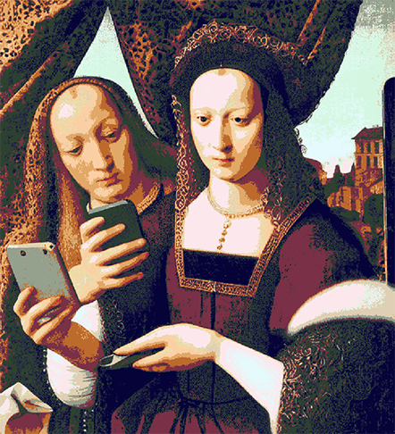
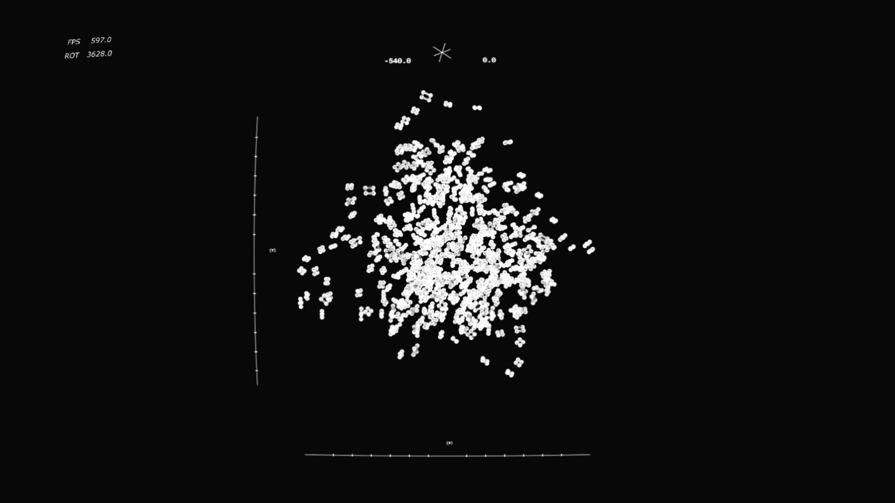

The visual element of the performance was real-time and audio reactive, which captured the facial structure of the performing sound artist. By utilising Machine Learning Models, the captured face was manipulated and distorted further to animate another portrait, in an attempt to deconstruct and isolate key compositional elements of the 'subject'. Through this work, we hoped to reflect on our digital identity, and highlight the disconnection between our physical and virtual presence.


↯(2022)Sound & Portraits,WGOA, Imagine Arts Festival. Waterford, Ireland